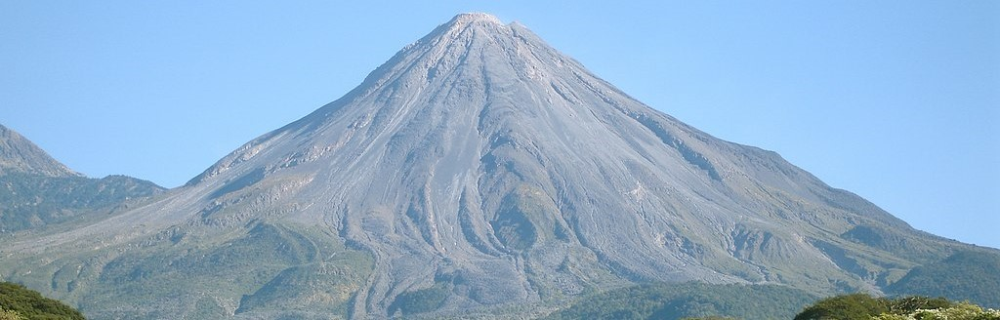
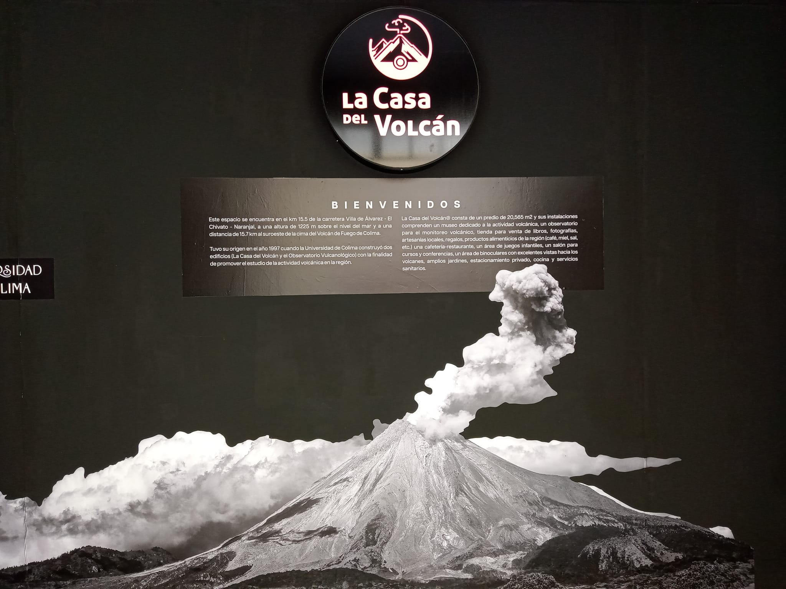
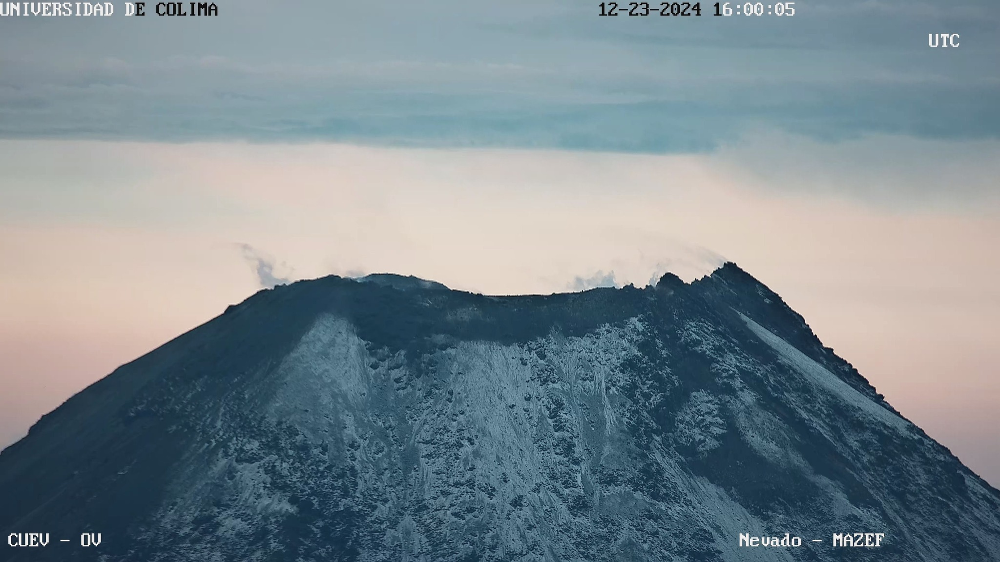
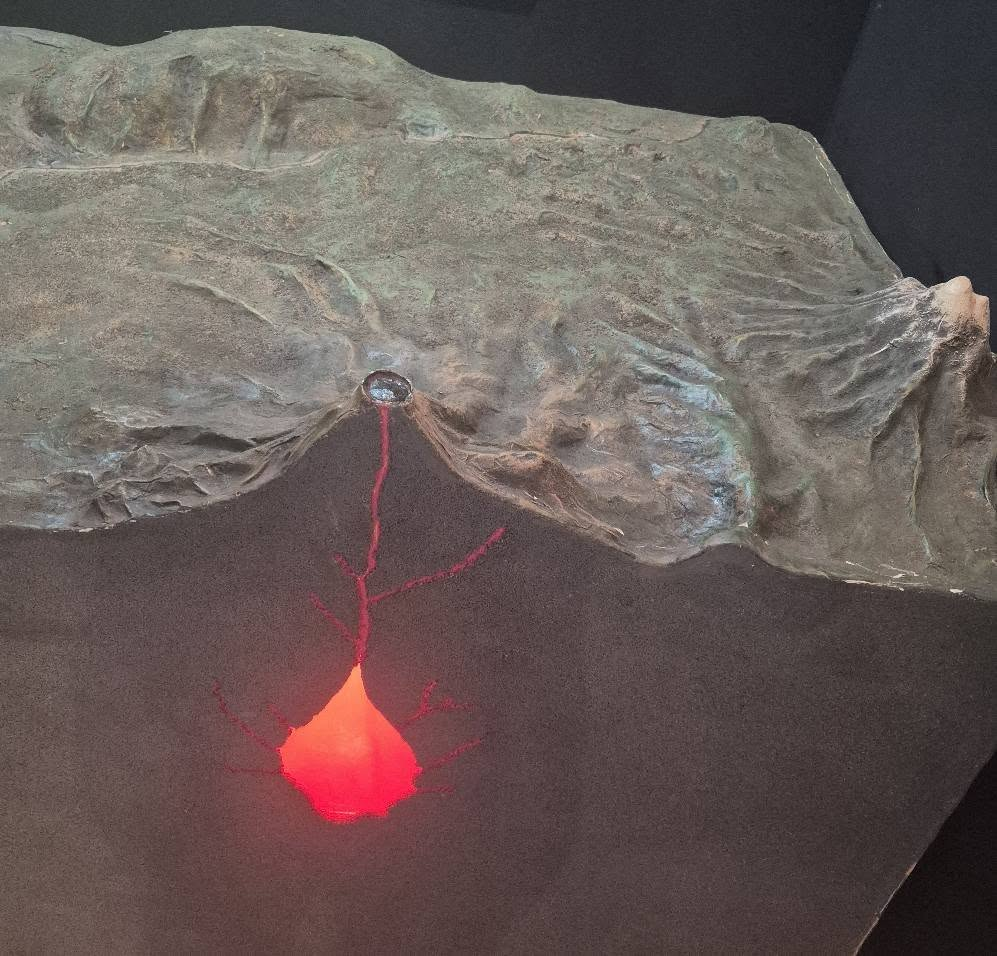
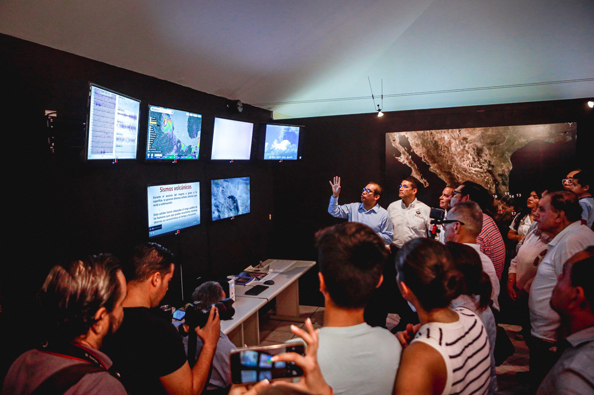
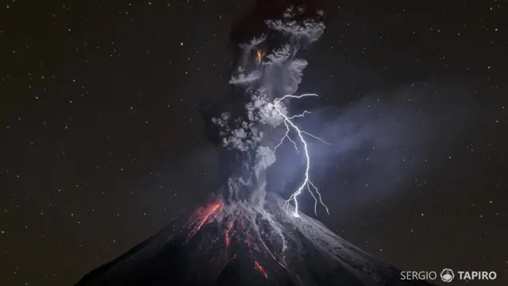
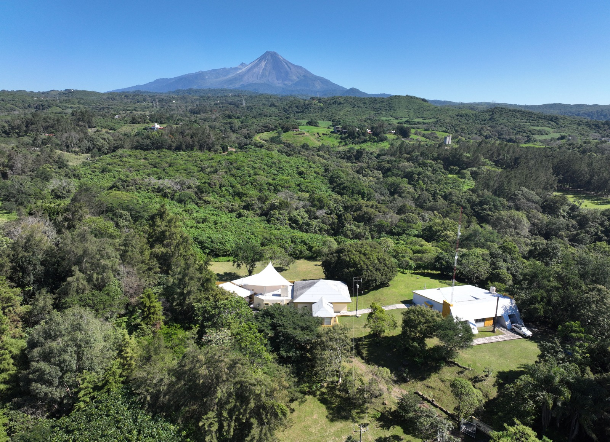
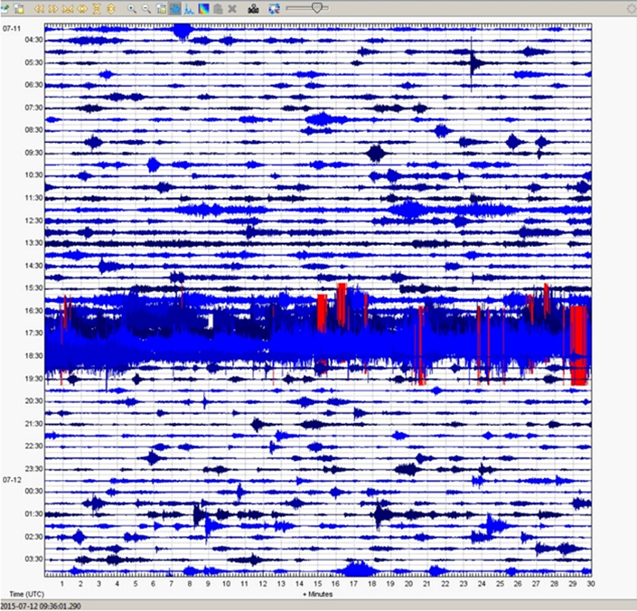

Explora las imágenes del Volcán de Colima y sus alrededores

Volcán de Colima
Vista panorámica del majestuoso Volcán de Colima, uno de los volcanes más activos de México.

Bienvenida a la Casa del Volcán
Entrada a la casa del volcán.

Vista desde la Montaña
Paisaje visto desde uno de los puntos de monitoreo del volcán.

Representaciones
Visita la Casa del Volcán y vive una experiencia única con representaciones y dinámicas.

Equipos de Monitoreo
Tecnología de punta utilizada para el análisis y monitoreo de la actividad volcánica en tiempo real.

Erupción Nocturna
Espectacular vista de una erupción captada durante la noche.

Casa Volcán
Instalaciones de investigación y educación del volcán.

Actividad Sísmica
Registro de la actividad sísmica relacionada con el comportamiento del volcán.